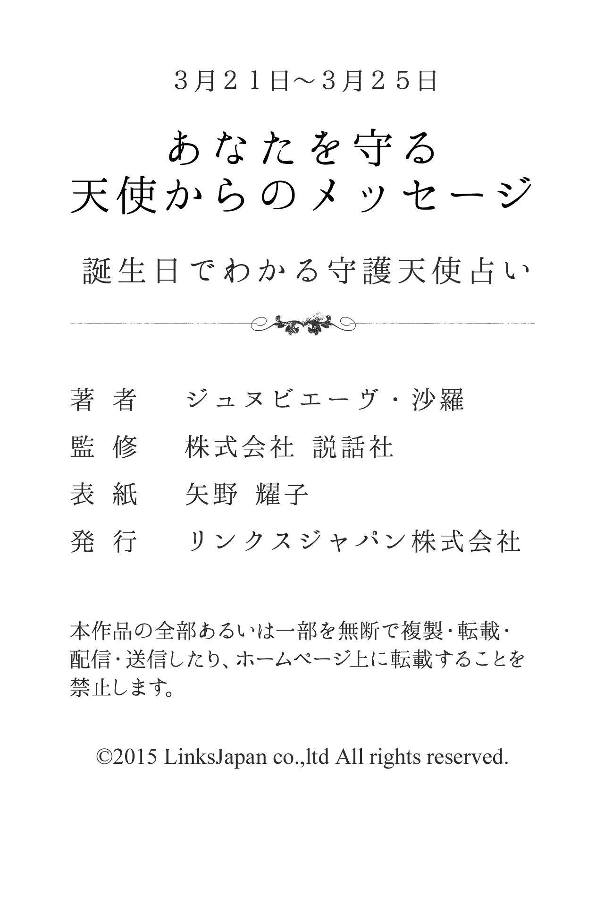

| ３月２１日～３月２５日生まれ あなたを守る天使からのメッセージ 誕生日でわかる守護天使占い (得トク文庫) | |
| ジュヌビエーヴ・沙羅 | |
| (2015) | |

1 、はじめに
「何かに、あるいは誰かに守られている......」
あなたは、そんなふうに感じたことはありませんか？
たとえば、限定発売のお菓子を購入しようと長い行列に並び、最後のたった１つを運良く購入できたり、学生の頃、授業で順々に答えなければいけなくなり、「あー、どうしよう！ 全然わかんないよ」と青ざめて固まっていると、先生があなたを指名しようとした瞬間、終了のベルが鳴り響いたり......
そんなほほえましいエピソードをもつ人もいれば、九死に一生を得るような重大事に遭遇して、心から「助かった！」と安堵のため息をもらした経験を持つ人もいるかもしれません。
そんなとき、あなたが何かに守られているような気がするのは、実は決して気のせいだけではないのです。なぜなら、それは守護天使のおかげだからです。
有名な神学者であり哲学者でもあるトマス・アクィナスは、『すべての人々に、クリスチャンであれ、それ以外の人であれ、たとえ大罪人であっても、あらゆるすべての人々に、決して離れることのない守護天使がついている』と記しています。
そう、守護天使とは、人が生まれてから死ぬまでの一生の間、その人と深く結びつき、保護し、そばにいてくれる天使のこと。あなたの心をより良い方向へと導くために霊感を送り込み、幸せな人生を送るための手助けをしてくれる神秘的な存在です。
さらに、それぞれの守護天使には、固有のキャラクターや得意な守護分野があります。したがって、あなただけを守ってくれる守護天使をよく知り、その言葉に耳を傾けることで、よりあなたらしく生きることができ、真実の幸せの形が見えてくることでしょう。
沙羅

2 、第１章 守護天使のささやき
★あなたの恋愛傾向
小天使エスプリアに見守られているあなたは、ルックスが良く異性からモテるタイプでしょう。恋愛に対しては情熱的で、恋をすると一方的に燃え上がり、相手の立場や気持ちなどおかまいなしに、あの手この手でアプローチします。失恋してもくじけず、立ち直りが早い人でしょう。ただし、熱しやすく冷めやすい性格なので、すぐに飽きてしまう傾向があります。常に新鮮な刺激を求めるので、真剣に長くつき合うのは苦手です。
★好きなタイプと嫌いなタイプ
あなたの好みのタイプは、バイタリティのある人です。何ごとも自分と一緒にテンポ良く行動できる人との交際を望んでいます。一方、苦手なタイプは、独占欲が強く何かと束縛するタイプの人です。だからといって、ただ従うだけの人ももの足りないでしょう。
★最も好むセクシャルな雰囲気
あなたは、あまりムードにこだわるよりも、あなたからストレートに気持ちをぶつけられたほうが、うれしいでしょう。大胆な行為にも興味津々なので、積極的に、そしてセクシーにリードされると、あなたはますます燃え上がります。
★運命の出会いはどんな人？
あなたの運命の人は、大らかで明るい人でしょう。初対面での印象も元気でエネルギッシュなはずで、あなたとのおしゃべりも尽きないはずです。また、積極的で根っからの行動派といえ、レジャーやスポーツが得意で、趣味としても楽しんでいる人でしょう。
★運命の出会いが与える影響力
運命の出会いがあなたに与える影響力は、外面的なものに大きく表れそうです。もともとファッションセンスのいいあなたですが、相手の好みに合わせながら、さらに磨きがかかってくるでしょう。相手の好き嫌いを事あるごとに聞き出しては、少しでも気に入られたい、ほめられたい、愛されたいとかいがいしいほどに一生懸命になるはずです。何をおいても相手が第一であり、周囲が驚くほどの積極性と華やかさで、目を惹くことになるでしょう。
★結婚後の変化
結婚後あなたは、それまでの恋多き人のイメージからは想像もつかないような、しっかり者の家庭人になるでしょう。パートナーを敬い、子供を大切にするあなたの暮らしぶりは、結婚前のあなたを知っている人をびっくりさせるかもしれません。結婚と同時にあなたの幸せは、家族の幸せそのものになります。配偶者を立てつつも、家庭内での主導権はしっかりと握り、少々の逆境や困難はカラッと笑い飛ばして、のり切っていくでしょう。教育熱心になる可能性が高そうです。
★好きな恋のシチュエーション
あなたの好きな恋のシチュエーションは、お互いに気持ちが盛り上がり、一気に情熱的に燃え上がっているときにあります。お互いに好きだという気持ちが手にとるようにわかり、手をつないでも食事をしても、何をしていてもドキドキワクワクな状況です。特に、おつき合いを始めた当初の新鮮さと刺激、そんなときめき感がたまらなく好きでしょう。また、自分の気に入った相手を口説き落とす、積極的にアプローチして振り向かせる、といったシチュエーションに胸躍るようです。
★どんな人を選べばうまくいく？
あなたは、エネルギッシュで行動的なパートナーを選ぶべきです。そうすれば、レジャーやスポーツなど、一緒にアクティブな活動を楽しみ、有意義なつき合いができるでしょう。飽きっぽいあなたも、刺激的なパートナーとなら、退屈しないはずです。また、明るく大らかな人なら、負けず嫌いなあなたを受けとめてくれます。反対に、征服欲が強いタイプを選ぶと、ケンカになってしまうことが多いでしょう。だからといって、何でも言うことを聞くおとなしい人も、あなたの浮気心を助長するだけです。
★イメージチェンジのアドバイス
あなたは、ファッションやメイクに最新の流行をとり入れてみるといいでしょう。実用的なものばかりではなく、エレガントさをプラスするのがおすすめです。ただし、大胆に肌を露出したり濃厚な香水をつけると、セクシー過ぎてしまい逆効果になるので気をつけましょう。
★あなたが恋に感じる幸せ
エネルギッシュで行動力抜群のあなたは、アクティブに活動しているとき、幸せを実感します。楽しく賑やかなことが大好きなので、家でのんびり過ごすより、ドライブやレジャーに出かけ、愉快な時間を共有することが、あなたの喜びでしょう。また、スポーツや勉強など、相手と二人で競いながら、お互い張り合って頑張ると、充実感を得るはずです。反対に、相手が情熱的に応えてくれないと、もの足りなさを感じてしまうでしょう。
★求めているものは何？
恋人関係になったら、あなたは自分と同じようにエネルギッシュに行動することを、相手に望むでしょう。休みの日ともなれば、家でじっとしていることはなさそうです。共通の仲間とともにスポーツで汗を流したり、海や山へと精力的に出かけることになるでしょう。

3 、第２章 大天使の恋予言
★どうすれば幸福な恋を獲得できる？
あなたを守護していてくれる大天使メタトロンは、「火と愛の天使」とも呼ばれ、あなたに強い意志を与えてくれているはずです。また、あなたが恋愛において危機に陥ったときや、思い悩んだときは、そっとアドバイスを与えながら、守ってくれることでしょう。あなたが幸福な恋をつかみとるには、積極的に湖の岸辺や海岸、噴水のある公園など、水にあふれた場所に行くといいでしょう。メタトロンの加護を得ることができます。また、仕事中のティーブレイクにもツキがあります。
★あなたのセックス傾向
あなたの魅力は、ベッドの中でこそ大いにその力を発揮するでしょう。それは、時には大胆に、また時には非常に繊細に快楽の世界へと誘い込みます。基本的には自分からベッドに誘っていくこともできますし、プレイのほうもリードしたがる傾向があるでしょう。ただし、快楽と楽しみだけを追求してしまう面が強まってしまうことで、かえって恋人との関係に破綻をきたしてしまうといったケースもあり得そうです。
★あなたが捨てるべき性のこだわり
あなたは、甘いムードたっぷりの場所や雰囲気ばかりだと、逆に盛り上がることができず、心のどこかでスポーツの延長のような楽しみ方にこだわっています。また、前戯や終わった後にイチャつくことを面倒臭いと思ってしまいがちなのは改めましょう。
★運命の出会いの瞬間
あなたにとっての運命の出会いは、相手が気の合う異性の友人の中の一人として存在しているために、いつ知り合ったのかさえ覚えていないことがあります。ただ、一瞬、「好みのタイプかもしれない」と感じても、そのときのあなたは他の異性に気持ちが揺れていることがあるでしょう。
★あなたが与える愛の特徴
あなたは、おつき合いする相手のタイプやおかれた状況に、ごく自然に上手に合わせていくことができます。相手からすれば、いつも自分の都合や好みに合わせて、同意してくれるあなたに愛しさを感じずにはいられないでしょう。また、あなたは外見的にも性的な魅力を兼ね備えた人ですから、一気に恋の虜にしてしまえるはずです。デートやおしゃべり、セックスに至るまで二人で過ごす、すべての時間において、恋の楽しさを相手に与えてあげられるあなたでしょう。
★運命の出会いを無駄にしないために
あなたが運命の出会いを成就させるためには、出会ったことだけに満足せず、自分からも意欲的に幸せをつかんでいくという姿勢を見せていくことが大切です。与えてもらう愛情を大切にすることもさることながら、二人は何の迷いや不安のない関係であることを十分にアピールしていきましょう。また、幸せな日々に甘んじて、それが当たり前に感じられることもあるかもしれませんが、決して他の人に浮ついた気持ちをもったり、大き過ぎるほどの理想をもたないことがポイントになります。相手との歩調を合わせる努力も怠らないようにしましょう。
★あなたの魅力と弱点
あなたの魅力は、相手に自分を無理なく合わせていくことができ、親近感のあるコミュニケーションができることになります。ごく当たり前のように接しながら、自分という人間を強く印象づけていけるでしょう。外見的にも、美しさにあふれていますから、相手からするととても魅力的に映るはずです。ただ、そんなあなたですから、何人かの人からアプローチされることも多く、猛烈にアタックされると、さほど好きでなくても、つい交際を始めてしまう弱点があるでしょう。時には相手に振り回されてしまうこともあります。
★あなたを助けてくれるのは？
あなたを助けてくれるのは、気の合う先輩になります。経験豊かな先輩に助言してもらえば、自分の間違えにも素直に気づくことができるはずです。また、前向きに挑戦してきた先輩を見習い、自分も頑張りたいというエネルギーが湧いてくるでしょう。
★あなたが告白する場合のアドバイス
あなたが告白する場合、自分の大胆さをアピールしていくといいでしょう。明るく元気な面を活かし、相手を楽しい気分にさせるよう心がければ、好印象を与えられるはずです。堅苦しい雰囲気にならないで告白に挑むことが、成功のポイントになります。ただし、さわやかさを強調し過ぎると、ただの友人で終わってしまいそうなので気をつけてください。カジュアルなファッションや居酒屋で一杯といったスタイルをやめて、あえてロマンチックなムードづくりを工夫してみることが大切でしょう。
★あなたの恋の問題点
あなたは、好きになった相手に対しては、巧みなほど自分を合わせていくことができ、上手な交際をしていける半面、自分が気づかないうちに振りまわされ、利用されてしまうといったことに陥ります。時には、自分はさほど好きではなくても、相手のほうから猛烈なアタックをされると、おつき合いを始めてしまうということもあるでしょう。アプローチされる機会には恵まれるものの、その分、恋愛に対する緊張感や期待感が薄れ、短期間のおつき合いを繰り返すということもあるようです。
★幸せな恋のために、あなたが変えたほうがいい点
あなたは、実際に交際している相手に対して、どこまで本気なのかを自分自身でもわからなくなることがあるようです。それは、決していいことではありません。楽しさばかりを追い求め、それを愛情だとカン違いすることもあるでしょう。相手に対しても、そして、自分自身に対しても誠実でいることが求められます。

4 、第３章 大天使のご神託
★あなたが幸福な恋を見つけるために
あなたは、広く浅いつき合いをやめて、一人の人とじっくり交際するよう心がけてみましょう。「他にもいい人がいるかも」などと思っていると、チャンスを逃がすだけです。また、気に入った人に出会ったら、行動を起こす前に、考える時間をつくることを忘れないでください。いつも同じように積極的にアプローチするだけではなく、相手の気持ちを察し、歩調を合わせるよう心がけましょう。さらに、言い寄ってくる人を誰でも受け入れるのではなく、本当に大切な人かどうか、確認することも試してみてください。
★不倫関係をどう考える？
あなたは不倫関係というものを、ごく普通の恋愛としてとらえているようです。基本的に自分の感情に正直な人なので、相手のことを本気で好きになってしまった以上、たとえ相手が既婚者であろうとも、また自分に恋人や夫がいようとも関係ないと考えます。しかも、飽きっぽく、誰と交際してもやがては他に恋の対象を探す傾向があり、タイミングさえ合えば交際することを望む傾向にあるでしょう。特に、自分の思いどおりになる人とは、関係をもちたがります。
★あなたが不倫関係にはまってしまう理由は？
あなたが不倫関係にはまってしまう理由は、相手の甘いムードに酔わされるからでしょう。いけないことと知りながら、相手の巧みなアプローチに溺れてしまったのです。その上、「自分はモテる」といった自惚れもあるため、容易に関係をもちやすいことも要因の一つでしょう。また、自分からモーションをかけ相手を惑わすつもりが、逆にあなた自身がはまってしまうようです。
★あなたに相手から惹かれる理由
あなたが相手に惹かれた本当の理由は、どんなときにも前向きに突き進む、あなたのパワーに圧倒されたからでしょう。どんな困難に遭遇しても、決して深刻に落ち込むことなく、すべてを笑い飛ばして解決してしまうようなあなたのおおらかさに、相手はすっかり惹き込まれてしまったようです。いつもたくさんの友人に囲まれて、楽しそうに過ごすあなたを見ていると、相手も幸せな気持ちになるのでしょう。あなたの大雑把さも、相手には長所に思えるようです。
★あなたの悪い癖
あなたは、恋という独特の雰囲気に流されてしまうのが、悪い癖でしょう。本命の恋人を愛しているのに、好みのタイプからアプローチをかけられると心のタガがゆるみ、過ちを犯してしまいます。また、異性を惑わす術を本能的に知っていますから、時には自分から故意に誘いを待っているような仕草を試したりすることもあるでしょう。それは、心の奥底に自分はモテるという自惚れがあるからのようです。
★あなたは結婚後、浮気をする？
あなたは、自分の気持ちをストレートにぶつける直情型です。しかも、飽きっぽいのが特徴なので、どちらかといえば浮気をする可能性は高いでしょう。そのため、結婚した後であっても、もっといい人を見つけたと思えば、すぐにでも心は泳いでいってしまいそうです。また、自分に対して従順な異性に弱いのが問題でしょう。そういうタイプは簡単に受け入れてしまいがちなので、そのまま流されてしまうケースが高まります。
★あなたが結婚後に望むこと
あなたは、結婚後、パートナーも自分と同じようにエネルギッシュに行動することを望むでしょう。休みの日ともなれば、家族ぐるみで仲間とスポーツをしたり、海や山へと精力的に出かけることになりそうです。また、たくさんの人たちに祝福される結婚生活を送りたいという気持ちが強いため、パートナーの家族ときちんとした関係を築きたいと望むでしょう。さらに、隠しごとは厳禁のオープンな関係も求めます。
★あなたは、どんな恋を求めている？
あなたは恋をしていないと、生きている気がしないような恋愛至上主義者です。その意味では、一年中、発情しているといっても過言ではありません。そして、自分の情熱を受け入れてくれる相手を探して、常にアンテナを張っていることでしょう。したがって、相手のほうから積極的にアピールすれば、あなたが飛びついていく可能性は高いものがあります。特に、開放的な気分になる夏や、一人ぼっちで過ごすことが耐えられないクリスマスシーズンは、あなたの恋愛モードが最高潮に達するようです。
★あなたの恋の終わりと始まり
あなたの恋が終わりを告げるとすれば、自分がイメージしていた恋愛と現実の恋とのギャップが、大きく感じられたときです。ロマンチックなムードがゼロに近かったり、あなたを楽しませ気づかいをする努力が相手になかったりすると、恋心はみるみるしぼんでしまうでしょう。でも、新しい出会いは、まもなくやってきます。その恋は、あこがれから始まるでしょう。たとえば、自分の好きなタレントによく似ている人が現れて、胸がキュンとときめいたり、尊敬できる先輩へのあこがれが、やがて恋に変わるはずです。
★あなたが夢見ている恋の形
あなたが夢見ているのは、愛だけに生きるような熱い恋。好きになった人以外、何も目に入らなくなり、その人に関係のないもの何もかもがすべて意味のないものに見えてしまうような、そして、自分のすべてを愛する人のために捧げてしまうような、そんな熱い熱い恋を夢見ています。つまり、一度、恋に落ちた以上は、どこまでも強く相手に恋焦がれ、相手にも情熱の限りに思われたいという激しい望みを強くもっているタイプです。

5 、第４章 大天使のアドバイス
★どうすれば幸福な恋を獲得できる？
あなたが仕事場で株を上げる方法は、見栄を張らずに、素直に人と接することです。自分のもっているエネルギーを無駄にせず、時と場所を考えて上手にコントロールしていくことがポイントになります。特に、勝ち気な部分は意識的に抑え、無理のない形で周囲を引っ張っていくといいでしょう。また、仕事状況が難航しているようなときは、あなたのもっている想像力を最大限に活かし、新しい提案やビジョンを打ち出してください。周囲に活気を与えることで、自ずと株が上がります。
★あなたが能力を活かすためには？
あなたの能力を活かすためには、問題に直面しても、粘り強く頑張ることが大切です。特に、競争に負け途中であきらめてしまうと、あなたの才能は花開くことがありません。何ごとも放棄しないことが重要でしょう。そうすれば、必ずあなたが望むような結果につながっていきます。また、先入観を捨てて、素直な気持ちでとり組むこともポイントです。勝ち気で機転の利くあなたゆえに、ついその場で嘘をついてしまいがちになります。事実を正確に伝えるように心がけましょう。
★あなたは仕事と家庭を両立できる？
あなたは仕事と家庭をきちんと区別して、やっていける人です。どちらに対しても全力投球で臨んでいくことでしょう。もともとが負けず嫌いな気質なので、仮に家庭がうまくいっていない状態であっても、仕事にもち込むということはしません。また、仕事に問題が起こったとしても、むやみに愚痴をこぼしたりせず、あえて明るく振る舞うことでしょう。性格上、何ごとにも手を抜かないあなたですから、家族みんなから頼りにされるに違いありません。
★あなたにピッタリの職業
あなたにピッタリの職業は、クリエイティブなものでしょう。時代の先端をいくベンチャービジネスを展開したり、広告関係や報道など、創造性と世の中を読む力が試される分野で実力を発揮します。なぜなら、あなたは新しいことを考え、それを実現していく力をもっているからです。また、負けず嫌いで勝負強さもあるので、営業やプロのスポーツ選手などでも活躍の可能性もあります。グローバルな感覚を活かした仕事にも向くでしょう。

6 、エピローグ
ここで紹介しましたのは、９の大天使の元にそれぞれ８の小天使が存在するというヒエラルキーとグループ構造をもとに占う、ヨーロッパにおいては最も親しまれている「守護天使占い」です。
有名人やスポーツ選手に限らず、あなたの周囲にも、「持ってる」と感じられる人が、きっといるのではないでしょうか。その「持ってる」とは、秀でた才能だったり、華々しい個性だったりするケースもあれば、ここぞというときにパワーを発揮できる勝負強さや、チャンスをモノにする力だったり、皆の視線をひとりじめしてしまう磁力のような魅力や驚異的な実行力だったりするケースもあるでしょう。
いずれにせよ「持ってる」人は、何か不思議なパワーに守られているように見えるはずです。その不思議なパワーこそ、実は守護天使というパワーなのです。
そして、自分の守護天使を知り、守護天使に出会った今日からは、あなたも「持ってる」人の仲間入りを果たしたのです。守護天使の恩恵を、守護天使の慈愛を、あなたもめいっぱい感じて、「持ってる」人生を謳歌してください。
沙羅

7 、著者プロフィール
ジュヌビエーヴ・沙羅
8 月10 日北海道函館市生まれ。女性誌、書籍の編集を経て、占術家に転身。西洋占星術や四柱推命を初めとして、夢占い、タロット占い、紫微斗数占いと幅広く占術を研究。
●著作
「四柱推命恋愛運」（実業之日本社）
「幸運・不運が一目でわかる夢占い」（ナツメ社）
「幸せを呼ぶパワーストーン」（実業之日本社）
「愛とメタモル深層心理テスト」（実業之日本社）
「初めて作るパワーストーンアクセサリー」（ブティック社）
「とっておきの星占い」（ナツメ社）ほか、多数。
